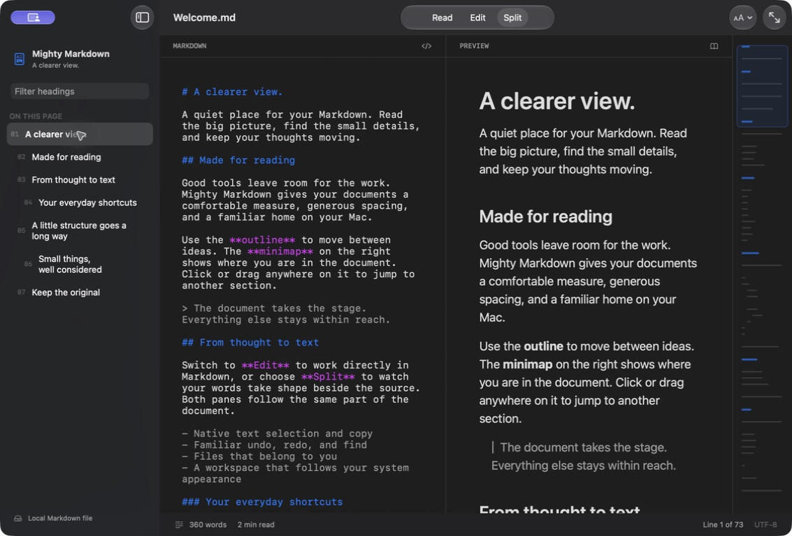

Markdown, at home on Mac.
A clearer view.
A little more focus.
Read, write, and find your way through Markdown.
A native workspace for the files you already own.
Your words. Your way.

Less between you
and the document.
Familiar Mac controls. Thoughtful ways to move through a page. Room for the work itself.
- Three ways to work
- Read comfortably, edit your Markdown, or keep source and preview together in Split mode.
- Find the next thought
- Filter the heading outline. Click or drag the minimap to jump through longer documents.
- Make room for reading
- Choose your prose and code fonts, adjust text size and reading width, or turn on focus mode.
- A familiar Mac experience
- Native windows, undo, redo, find, and system light and dark appearances. No new workflow to learn.
Files, not a platform.
Your documents stay in ordinary Markdown files. Open them, edit them, and save them where you choose. No account, analytics, or advertising.
Read the privacy policyA native space
for your next draft.
Mighty Markdown is being prepared for the Mac App Store.
Requires macOS 26 or later. Apple Silicon and Intel.